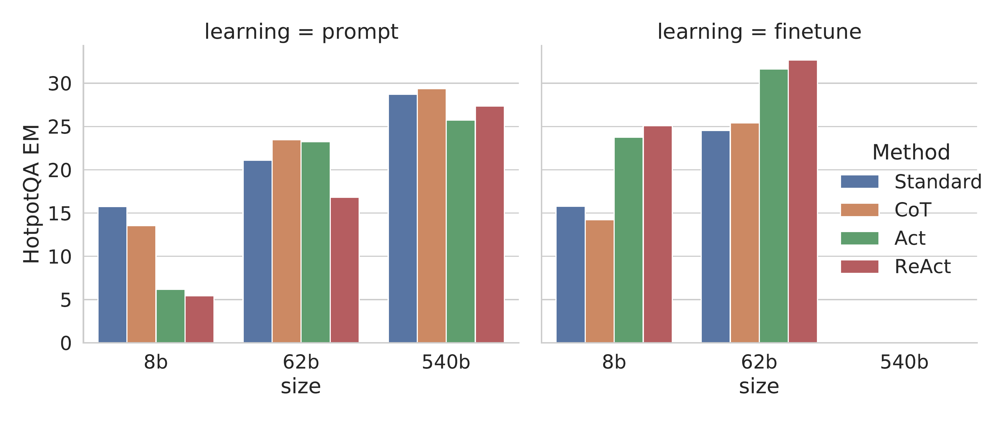
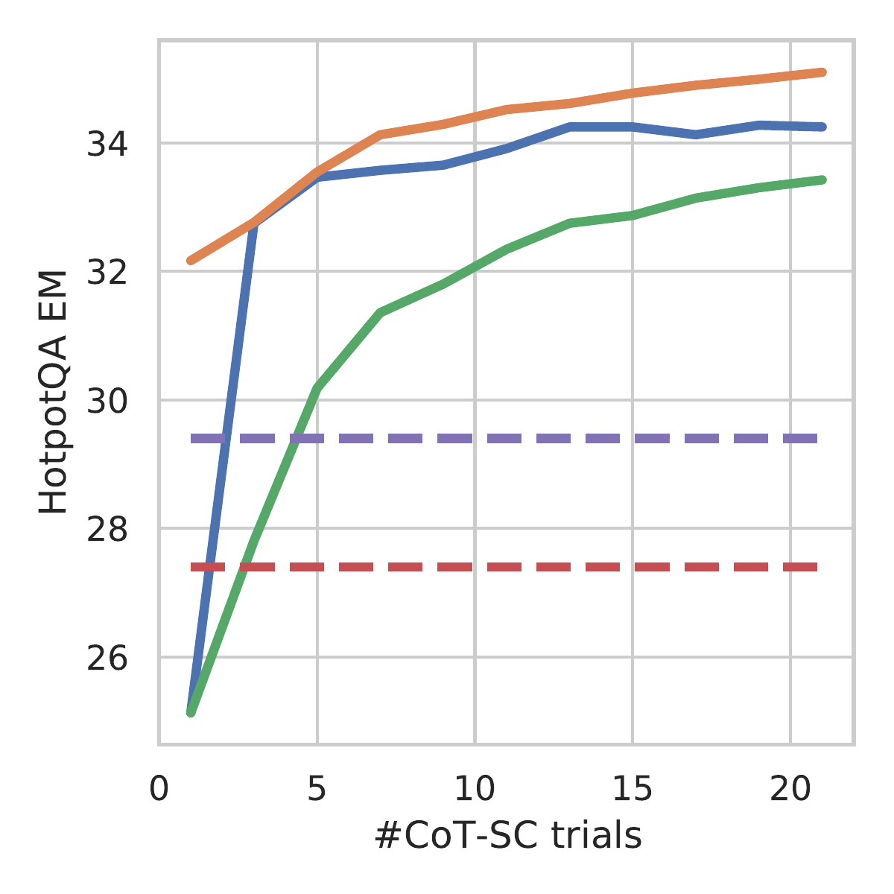
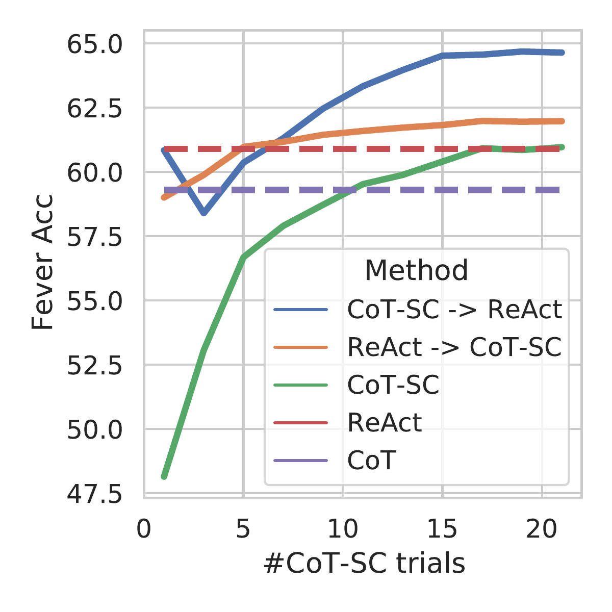

ReAct: 在语言模型中协同推理与行动
一、论文摘要
本文提出了一种名为 ReAct 的新方法，旨在将大型语言模型（LLMs）的推理能力与行动能力进行协同。传统的LLMs在语言理解和交互式决策任务中表现出色，但其推理能力（如思维链提示）和行动能力（如动作计划生成）主要被作为独立主题进行研究。本文探索了让LLMs以交替方式生成推理轨迹和任务特定动作的方法，从而实现两者之间的更强协同：推理轨迹帮助模型推导、跟踪和更新动作计划，同时处理异常；而动作则使模型能够与外部来源（如知识库或环境）进行交互并收集额外信息。
作者将ReAct应用于多种语言和决策任务，展示了其相对于最先进基线方法的有效性，同时提高了人类可解释性和可信度。具体而言，在问答（HotpotQA）和事实验证（FEVER）任务中，ReAct通过与简单Wikipedia API交互，克服了思维链推理中普遍存在的幻觉和错误传播问题，并生成了比没有推理轨迹的基线方法更易于理解的任务解决轨迹。此外，在两个交互式决策基准测试（ALFWorld和WebShop）中，ReAct分别以仅1-2个上下文示例的提示，分别取得了34%和10%的绝对成功率提升，优于模仿学习和强化学习方法。
二、基本信息
| 项目 | 内容 |
|---|---|
| 论文 ID | 2210.03629 |
| 标题 | ReAct: Synergizing Reasoning and Acting in Language Models |
| 作者 | Shunyu Yao, Jeffrey Zhao, Dian Yu, Nan Du, Izhak Shafran, Karthik Narasimhan, Yuan Cao |
| 单位 | Princeton University, Google Research Brain team |
| 会议/期刊 | ICLR 2023 |
| 原文保存位置 | ~/.openclaw/workspace/papers/20260311_ReAct/source/ |
| 报告生成日期 | 2026-03-11 |
三、论文主体分析
1. 引言 (Introduction)
人类智能的一个独特特征是能够将面向任务的动作与语言推理（或内心独白）无缝结合。这种能力被理论化在人类认知中发挥重要作用，实现自我调节或策略化，并维持工作记忆。例如，在厨房做菜时，我们可以在任何两个具体动作之间用语言推理来跟踪进度、处理异常或调整计划，以及意识到何时需要外部信息。这种"行动"与"推理"之间的紧密协同使人类能够快速学习新任务并在面对新情况或信息不确定性时做出稳健的决策。
最近的研究暗示了将语言推理与自主系统中的交互式决策相结合的可能性。一方面，经过适当提示的大型语言模型已经展现出执行多步推理轨迹的能力，从问题中推导答案。然而，这种"思维链"推理是一个静态的黑箱，模型使用其内部表示来生成想法，并未与外部世界结合，这限制了它主动推理或更新知识的能力，可能导致事实幻觉和推理过程中的错误传播。
另一方面，最近的工作探索了预训练语言模型在交互环境中的规划和行动能力。这些方法通常将多模态观察转换为文本，使用语言模型生成领域特定的动作或计划，然后使用控制器来选择或执行它们。然而，它们没有使用语言模型对高级目标进行抽象推理或维持支持行动的工作记忆。
在本文中，我们提出了 ReAct，这是一个将推理和行动与语言模型结合用于解决各种语言推理和决策任务的通用范式。ReAct提示LLMs以交替方式生成语言推理轨迹和与任务相关的动作，允许模型执行动态推理来创建、维护和调整高级行动计划（推理以指导行动），同时与外部环境（例如Wikipedia）交互，将额外信息纳入推理（行动以促进推理）。
我们在四个不同的基准测试上对ReAct和最先进的基线方法进行了实证评估：问答（HotpotQA）、事实验证（FEVER）、基于文本的游戏（ALFWorld）和网页导航（WebShop）。对于HotpotQA和FEVER，通过访问模型可以交互的Wikipedia API，ReAct优于纯动作生成模型，同时与思维链推理（CoT）具有竞争力。总体最佳方法是ReAct和CoT的组合，允许在推理过程中同时利用内部知识和外部获取的信息。在ALFWorld和WebShop上，一到两个样本的ReAct提示就能够优于使用10³到10⁵个任务实例训练的模仿或强化学习方法，成功率分别提高了34%和10%。
主要贡献：
- 引入ReAct——一种新的基于提示的范式，在语言模型中协同推理和行动以解决通用任务；
- 在各种基准测试上进行了广泛实验，展示了在少样本学习设置下ReAct相对于单独执行推理或动作生成的先前方法的优势；
- 展示了在决策任务中稀疏、多功能推理的重要性；
- 分析了ReAct在提示设置下的局限性，并进行了初步的微调实验，展示了ReAct通过额外训练数据改进的潜力。
2. ReAct方法 (ReAct: Synergizing Reasoning + Acting)
考虑一个智能体与环境交互以解决任务的通用设置。在时间步$t$，智能体从环境接收观察$o_t \in \mathcal{O}$，并根据某个策略$\pi(a_t | c_t)$采取动作$a_t \in \mathcal{A}$，其中$c_t = (o_1, a_1, \cdots, o_{t-1}, a_{t-1}, o_t)$是给智能体的上下文。当映射$c_t \mapsto a_t$是高度隐式的且需要大量计算时，学习策略是具有挑战性的。
ReAct的核心思想是：将智能体的动作空间扩展为$\mathcal{\hat{A}} = \mathcal{A} \cup \mathcal{L}$，其中$\mathcal{L}$是语言空间。语言空间中的动作$\hat{a}_t \in \mathcal{L}$，我们称之为思考或推理轨迹，不影响外部环境，因此不会导致观察反馈。相反，思考$\hat{a}_t$旨在通过对当前上下文$c_t$进行推理来整合有用信息，并更新上下文$c_{t_t} = (c_t, \hat{a}_t)$以支持未来的推理或行动。
由于决策和推理能力集成在大型语言模型中，ReAct具有几个独特的特点：
- 直观且易于设计：设计ReAct提示很简单，因为人类注释者只需在他们采取的动作上用语言写下他们的想法。
- 通用且灵活：由于灵活的想法空间和交替的出现格式，ReAct适用于具有不同动作空间和推理需求的各种任务。
- 高性能且鲁棒：ReAct仅从一两个上下文示例学习就表现出强大的泛化能力，始终优于仅具有推理或行动的基线方法。
- 与人类对齐且可控：ReAct提供了一个可解释的顺序决策和推理过程，人类可以轻松检查推理的事实正确性。
3. 知识密集型推理任务 (Knowledge-Intensive Reasoning Tasks)
我们从知识密集型推理任务开始，如多跳问答和事实验证。
3.1 设置
领域：我们考虑两个具有挑战性的知识检索和推理数据集：
- HotpotQA：一个多跳问答基准，需要对两个或更多Wikipedia段落进行推理
- FEVER：一个事实验证基准，每个声明被标注为SUPPORTS、REFUTES或NOT ENOUGH INFO
动作空间：我们设计了一个简单的Wikipedia Web API，包含三种类型的动作来支持交互式信息检索：
- search[entity]：返回相应entity的Wikipedia页面前5句，或建议top-5相似实体
- lookup[string]：返回页面中包含string的下一句，模拟浏览器Ctrl+F功能
- finish[answer]：用answer结束当前任务
3.2 方法
ReAct提示：对于HotpotQA和FEVER，我们从训练集中随机选择6个和3个案例，并手动编写ReAct格式的轨迹作为少样本示例。每个轨迹包含多个思考-动作-观察步骤。
基线方法：
- Standard prompting (Standard)：移除所有思考、动作、观察
- Chain-of-thought (CoT)：移除动作和观察，作为纯推理基线
- Act-only：移除ReAct轨迹中的思考
- CoT-SC：自一致性方法，通过多数投票选择答案
结合内部和外部知识：
- ReAct → CoT-SC：当ReAct在给定步骤内未能返回答案时，回退到CoT-SC
- CoT-SC → ReAct：当CoT-SC样本中的多数答案出现少于n/2次时，回退到ReAct
3.3 结果与观察
ReAct始终优于Act-only：表1显示了在PaLM-540B上使用不同提示方法的HotpotQA和FEVER结果。ReAct在两个任务上都优于Act-only，展示了推理指导行动的价值。
ReAct与CoT对比：ReAct在FEVER上优于CoT（60.9 vs 56.3），但在HotpotQA上略逊于CoT（27.4 vs 29.4）。对于FEVER，SUPPORTS/REFUTES声明可能只有微小差异，因此通过搜索获取准确和最新知识至关重要。
人类研究的主要发现：
- A) 幻觉是CoT的严重问题：CoT的误报率远高于ReAct（14% vs 6%），幻觉占其失败模式的主要部分（56%）
- B) ReAct的结构约束降低了灵活性：虽然交替推理、动作和观察步骤提高了ReAct的真实性和可信度，但也导致比CoT更高的推理错误率
- C) 对于ReAct，通过搜索成功检索信息至关重要：非信息性搜索占错误案例的23%，使模型难以恢复和重新制定思考
ReAct + CoT-SC在提示LLM中表现最佳：表1显示，HotpotQA的最佳提示方法是ReAct → CoT-SC，FEVER的最佳提示方法是CoT-SC → ReAct。这两种方法都显著且始终优于CoT-SC。
微调表现最佳：图3显示了在HotpotQA上提示/微调四种方法的扩展效果。使用仅3000个示例微调后，ReAct成为四种方法中最好的，PaLM-8B微调的ReAct优于所有PaLM-62B提示方法。
4. 决策任务 (Decision Making Tasks)
我们还在两个基于语言的交互式决策任务上测试了ReAct：ALFWorld和WebShop。
4.1 ALFWorld
ALFWorld是一个基于文本的游戏，设计用于与具身ALFRED基准对齐。它包括6种类型的任务，智能体需要通过文本动作导航和交互模拟家庭环境来实现高级目标。一个任务实例可能有多于50个位置，需要专家策略超过50步解决，因此挑战智能体规划和跟踪子目标。
结果：表2（ALFWorld）显示，ReAct最佳试验达到71%的平均成功率，显著优于最佳Act（45%）和BUTLER（37%）。实际上，即使较差的ReAct试验（48%）也优于两种方法的最佳试验。ReAct相对于Act的优势在六个受控试验中是一致的，性能提升从33%到90%，平均62%。
4.2 WebShop
WebShop是一个在线购物网站环境，包含118万真实产品和12k人类指令。与ALFWorld不同，WebShop包含高度多样的结构化和非结构化文本，需要智能体根据用户指令购买产品。
结果：表2（WebShop）显示，单样本Act提示已经与IL和IL+RL方法表现相当。通过额外的稀疏推理，ReAct取得了显著更好的性能，在成功率上比之前的最佳方法提高10%。
4.3 内部推理vs外部反馈的价值
ReAct是第一个在闭环系统中将LLM的推理和动作结合应用于交互环境的演示。最接近先前的工作是Inner Monologue（IM），但IM的"内心独白"仅限于环境状态的观察。与之对比，ReAct在决策中的推理轨迹是灵活和稀疏的，允许为不同任务引入多样化的推理类型。
实验表明，ReAct显著优于IM风格的提示（71 vs 53总体成功率），在六个任务中的五个具有一致的优势。
5. 相关工作 (Related Work)
语言模型推理：最著名的LLM推理工作是Chain-of-Thought（CoT），它揭示了LLM制定自己"思考程序"的能力。后续工作包括least-to-most提示、zero-shot-CoT和自一致性推理。
语言模型决策：LLMs在决策方面的能力使其能够执行语言生成之外的任务。WebGPT使用LM与Web浏览器交互。SayCan和Inner Monologue将LLMs用于机器人动作规划和决策。
6. 结论 (Conclusion)
我们提出了ReAct——一种简单但有效的方法，用于在大型语言模型中协同推理和行动。通过在多跳问答、事实检查和交互式决策任务上的多样化实验，我们表明ReAct导致了具有可解释决策轨迹的卓越性能。尽管我们的方法简单，但具有大动作空间的复杂任务需要更多演示才能学好，这很容易超过上下文学习的输入长度限制。我们在HotpotQA上探索了微调方法，初始结果很有前景，但从更多高质量人工标注中学习将是进一步提高性能的需求。将ReAct扩展到多任务训练并将其与强化学习等互补范式结合，可能会产生更强的智能体，进一步释放LLMs在更多应用中的潜力。
四、论文简评
创新点
- 提出ReAct范式：创新性地将推理（thoughts）和动作（actions）结合在同一框架中，通过交替生成的方式实现两者的协同
- 扩展动作空间：将语言空间纳入智能体的动作空间，使模型能够进行内部推理而不影响外部环境
- 通用性强：该方法适用于多种任务类型，包括知识密集型推理（QA、事实验证）和交互式决策（ALFWorld、WebShop）
- 可解释性强：推理轨迹使决策过程更加透明和可解释，人类可以轻松区分模型内部知识和外部来源的信息
局限性
- 输入长度限制：复杂任务需要更多演示示例，但容易超过上下文学习的输入长度限制
- 幻觉问题仍存在：虽然在一定程度上减少了幻觉，但推理错误率仍有一定比例
- 搜索质量依赖：ReAct的表现高度依赖于外部知识检索的质量，非信息性搜索会导致推理失败
应用场景
- 知识问答系统：结合外部知识库提供更准确的答案
- 智能助手：在需要多步推理和交互的任务中提供决策支持
- 具身智能体：在模拟或真实环境中进行任务规划和执行
- 网页导航与自动化：在WebShop等网页交互任务中表现优异
可改进方向
- 多任务训练：扩大ReAct训练规模，进行多任务学习
- 强化学习结合：将ReAct与强化学习结合，进一步提升性能
- 更好的检索机制：改进外部知识检索的质量，减少非信息性搜索
- 更长上下文支持：解决输入长度限制问题，支持更复杂的任务
- 混合方法优化：更智能地结合内部知识和外部获取的信息
参考图片

图1：四种提示方法的比较。(1a) Standard (1b) Chain-of-thought (1c) Act-only (1d) ReAct。展示了在HotpotQA和ALFWorld任务上的任务解决轨迹。
:::

图3：HotpotQA上四种方法的提示/微调扩展效果
:::

图4：PaLM-540B提示结果与使用的CoT-SC样本数量的关系（HotpotQA）
:::

图5：PaLM-540B提示结果与使用的CoT-SC样本数量的关系（FEVER）
:::